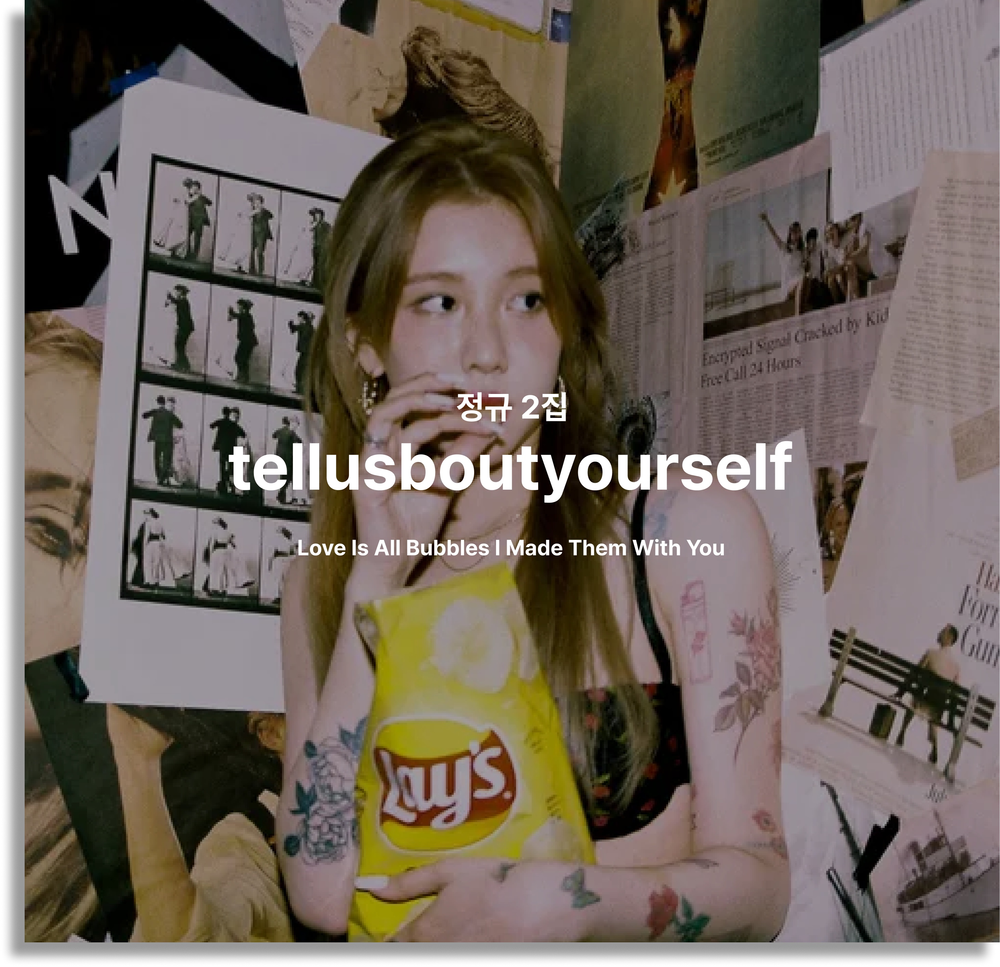
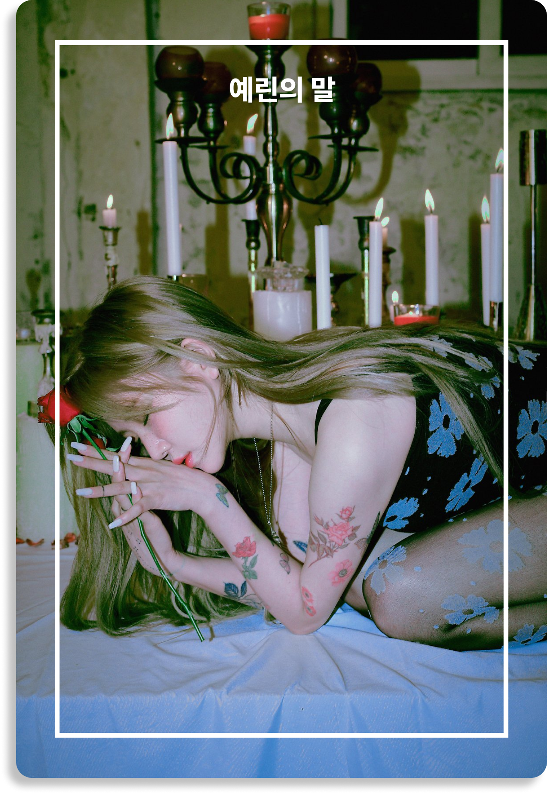
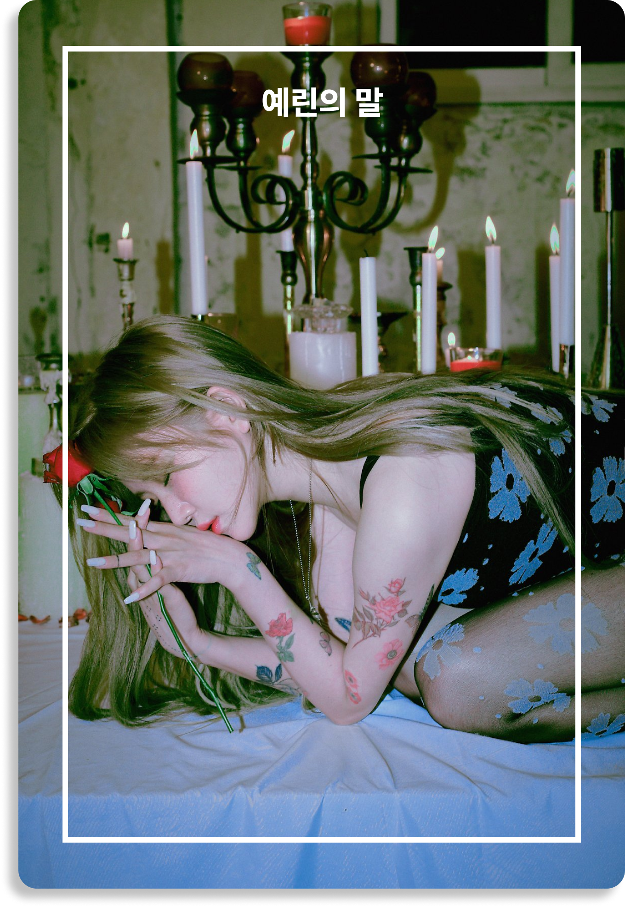
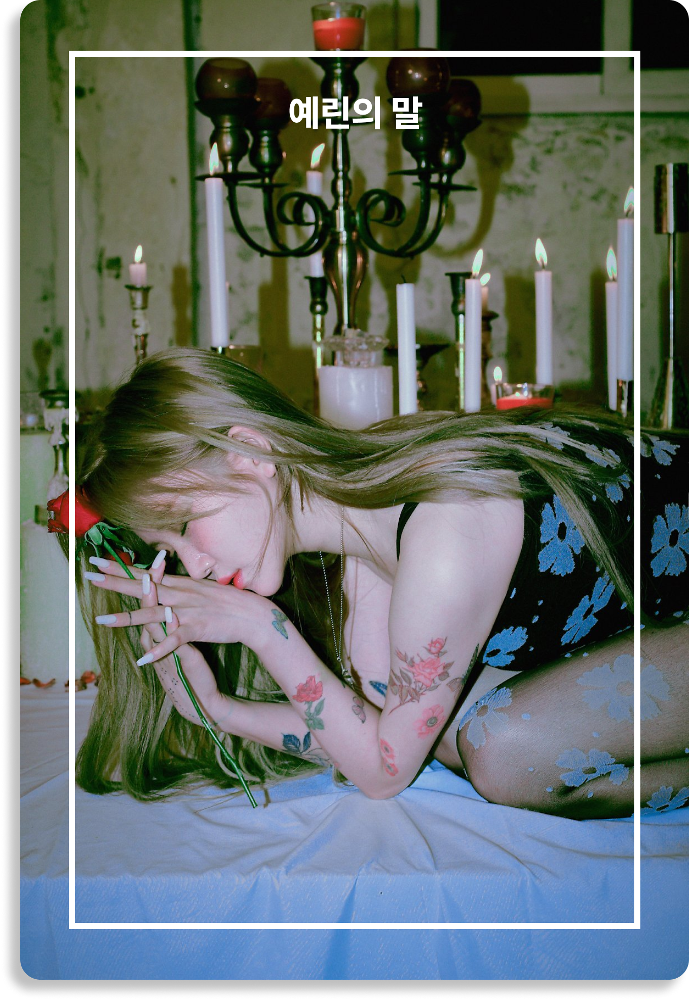
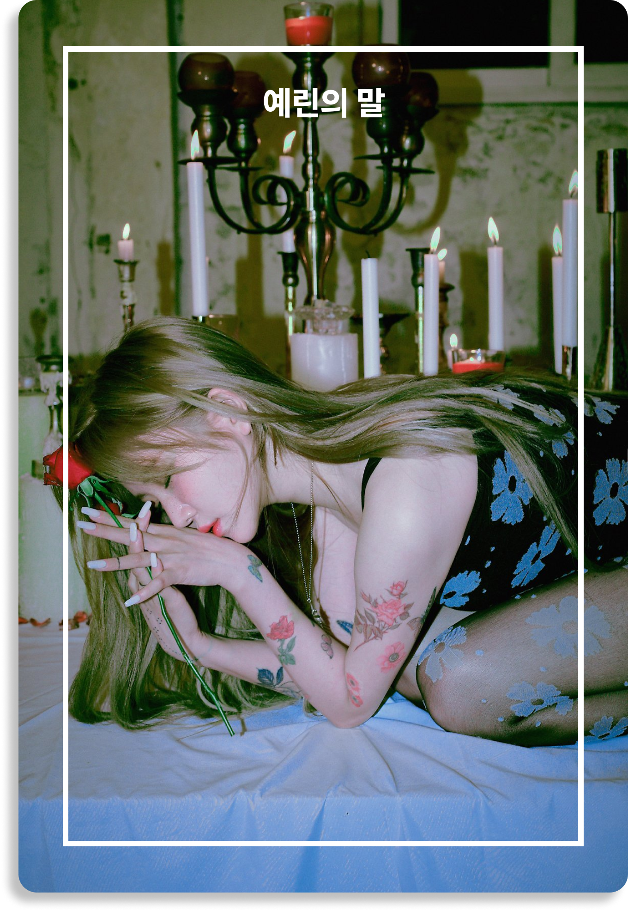

 



VINYL tellusboutyourself

14곡이다. 2019년의 [Every letter I sent you.]에 비해 숫자는 줄었지만
앨범 제작이 꺼려지는 풍토를 고려하면 여전히 상당한 볼륨이다. 아무래도
이것은 나에겐 아직 보여주고, 들려줄 것이 많이 남아 있음을 증명하고픈
욕망의 소산일 것이다. 수록곡들은 고르게 준수하고, 각각의 만듦새는
또렷하다. 1년 전의 [Our Love Is Great]와 [Every letter I sent you.]와
비교해 좀 더 굴곡이 명확해졌다고 보면 거의 정확하다.
음반은 알앤비, 하우스, 드림 팝, 모던 록을 두루 아우른다.
몽환적이다가도 파워가 실린 전개로 쭉 밀고 나갈 줄 알고, 절묘하게
기어를 변속하면서 분위기를 스윽 전환한다. 비유하자면 백예린의
세계에서는 구심과 원심이 역설이지만 공존한다. 바꿔 말해 일관성을
유지한 채 곡마다 서로 다른 질감을 길어낼 줄 안다. 비단 14라는 양감
때문만은 아니다. 신보 [tellusboutyourself]를 듣는다는 건 곧 다채로운
텍스쳐를 즐기는 행위와 다름없다. 뭐랄까. 자기 세계의 중심이 확고한
동시에 변용에 능한 뮤지션만이 해낼 수 있을 어떤 경지다.
그러면서도 자극으로 튀는 구석이라고는 없다. 백예린은 흐름을 타고,
그것을 즐기는 타입의 뮤지션임에 분명하다. 첫 곡 ‘Lovegame’을 들어보라.
그는 강렬한 한마디를 내뱉은 뒤 연주가 흘러가게끔 뒤로 물러서서 메아리
같은 코러스를 반복하는데 도리어 여기에 곡의 압권을 심어놨다. 이
구간에서 그는 사운드를 점층적으로, 미묘하게 쌓아가는 방식을 통해 작은
탄성을 불러온다.
‘You’re so lonely now, so you need me back by your side again’는
어떤가. 꿈결 같은 사운드스펙트럼으로 소리가 확산되듯 진행되는 곡이다.
밑바탕에는 초저역 베이스를 깔아 튼실하게 기초를 다졌고, 그 위에 기타
솔로, 바람을 연상케 하는 효과음을 더해 입체성을 구현했다. 뭐로 보나
‘Lovegame’과는 이질적이지 않은 선에서 다른 곡이다. 하나 더 있다.
‘You’re so lonely now, so you need me back by your side again’이
끝나자마자 터져 나오는 ‘I am not your ocean anymore’의 드럼 연주를
통해 우리는 [tellusboutyourself]가 철저히 앨범 맥락에서 기획된
소산임을 알 수 있다. 무엇보다 힘 있는 보컬과 색소폰 연주의 하모니가
돋보이는 후렴구의 매력이 상당한 곡이다.
간판으로 미는 싱글은 ‘Hate you’와 ‘0415’, 이렇게 두 곡이라고 한다.
하우스에 뿌리를 둔 ‘0415’에서는 풀무처럼 수축과 팽창을 반복하는 구절을
통해 특유의 바이브를 창조하는데 집중한 반면, ‘Hate you’에서는 비록
가사의 수위는 셀지언정 가장 대중적인 접근성을 드러낸다. 낯설게
느껴지는 지점 따위는 없다. 그의 곡은 언제나 개별성을 잃지 않는 범위
내에서 전체에 자연스럽게 스며든다.
이쯤에서 음악적인 변화에 대해 적어본다. 핵심은 다이내믹의 강조와
과감한 악곡 전환에 있는 것으로 보여진다. 전작과의 결정적인 차이가 하나
있다면 이것이다. 앞서 언급한 ‘Lovegame’의 브레이크 파트, 사운드를
분절하는 형식으로 듣는 이의 집중도를 쭉 끌어올리는 ‘HOMESWEETHOME’의
2분 30초 이후가 대표적인 케이스다. 그러나 반전 강도로 치자면 1위는
무조건 ‘Ms. Delicate’의 몫이어야 한다. 그중에서도 백예린의 보컬이
역동적인 그림을 그리는 곡 후반의 절정에 주목하길 바란다.
몽글몽글한 피아노 연주로 진행되는 ‘Hall & Oates’의 경우, 영향받은
음악을 아예 직접적으로 새겨 넣었다. 홀 앤 오츠(Hall & Oates) 외에 빛과
소금, 더 버드 앤 더 비(The Bird & The Bee) 등이 그들이다. 이 중 더
버드 앤 더 비는 수록곡 거의 전부를 홀 앤 오츠 음악으로만 채운 커버작을
발표한 적도 있다. 시간이 허락한다면 들어보길 권한다. 백예린이 당신의
최애라면 차애 정도는 충분히 될 수 있을 앨범이다.
노랫말에 대해 말해야 할 차례다. 영어가 문제 되지 않는다는 건 [Every
letter I sent you.]를 통해 증명되었으니 논외로 치자. 심층은 도리어
백예린의 발성에 있다. 아니, 좀 더 정확하게 설명하자면 그의 보컬 톤이
‘사운드와 함께 구현되는 방식’에 있다. 먼저 (몇몇 예외가 있지만)
백예린의 음악은 기본적으로 멜로디의 편차가 크지 않다. 일단 이 점이
중요하다. 다음으로 소리의 배치, 즉 공간감을 언급해야 한다. 백예린
목소리는 탁월한 전달력을 과신한 나머지 과잉으로 치닫지 않는다.
명징하게 울려 퍼지되 돌출되지 않는 보컬을 지향한다.
근거는 다 갖춰졌다. 이 두 가지 방향성을 기반으로 그는 듣는 이에게
얘기하듯 노래한다는 인상을 매혹적으로 심어준다. 인터뷰에 따르면
[tellusboutyourself]는 자기 안의 수많은 자아에게 자신에 대해
말해달라고 부탁하는 뜻이라고 한다. 이런 측면에서 볼 때 앨범은 마치
기억을 보존한 하나의 일기장 비슷한 역할을 해주는 셈이 된다.
그러나 이것을 단순한 과거-기억하기로 곡해해서는 안 된다. 기억하기란
기억을 대상화하여 그저 복원하는 작업이 아니라 기억하는 주체의 깨달음이
침투하는 과정인 까닭이다. 과연 그렇지 않은가 한번 곱씹어 보라. 과거가
당신의 현재를 만드는 게 아니다. 도리어 당신의 과거를 (재)구성하는 건
당신의 현재다. 이 앨범이 바로 그렇다. 각 노래는 각 자아를 대변하고,
거기에 백예린은 지난 1년간 겪어야 했던 여러 경험을 섬세한 노랫말로
녹여냈다. 따라서 가사 해석은 필수다.
지금까지 설명했듯 변화의 폭이 작지 않다. 그럼에도, 언제나 선결되어야
하는 것은 '변하지 않은 것이 무엇인지'를 알아내는 거라고 믿는다.
백예린의 신보 [tellusboutyourself]는 그리하여 변하지 않는 와중에
변화를 꿈꾼 음반이 된다. 기존 파트너인 구름에 더해 새로운 공동
편곡자로 방민혁이 합류한 모양새가 정확하게 이를 증거한다.
불변한 것은 또 있다. 유튜브라는 플랫폼에서 성장한 만큼 백예린은 유튜브
세대, 그러니까 2020년대라는 좌표에 더없이 어울리는 음악을 이번에도
들려준다. 이를테면 이것은 플레이리스트를 따로 짜거나, 찾을 필요가 없는
음악이다. 굳이 유튜브에 접속하지 않아도 이 앨범을 플레이하면 그 이상의
만족을 얻을 수 있기 때문이다. [tellusboutyourself]는 지금 시대의
상징적인 표정을 담아내는데 ‘다시금’ 성공한 결과물로 기억될 것이다.
결론이다. 발 딛고 서 있는 위치에는 변함이 없으되 시야는 넓어지고
사정거리는 길어진 음반이다. 과연, 미래에 시선 둔 자가 과거를
외면해서는 안 되는 법이리라. 이제부터 그는 과거의 일기를 현재의 렌즈로
표현하는 것을 넘어서 미래의 달력을 넘기기 시작할 것이다.
Q. 이번 앨범은 무려 14곡으로 꾸려졌어요. 전부 직접 작곡, 작사한
곡들이고요. 앨범을 완성하게 한 가장 큰 에너지는 무엇이었나요?
사람들이요. 사람들은 저를 불쾌하게 만들기도 하고, 상처 주기도 했다가,
행복하게 해주기도 하거든요. 저도 어쩔 수 없이 사람들에게서 많은 영향을
받아요. 이번 앨범에 수록된 곡들은 대부분 2019년에 작업을 했던
곡들인데, 이때는 제가 감정적으로 조금 머물러 있던 시기이기도 해요.
Q. 꼭 하나를 고르긴 어렵겠지만 가장 애정이 가는 곡이
있을까요?
하나만 고르자면 ‘I’m in love’를 선택할래요. 2019년 11월이었나?
베를린에 갔어요. 그해 11월의 베를린은 정말 추웠는데 그곳에서 썼던
가사가 아직도 기억에 남아요. 계절이 담겨 있는 노래거든요! 너무 추운
겨울에서 눈이 녹아내리는 봄이 오기까지의 과정이 오롯이 담긴 곡입니다.
Q. 제목들이 무척 구체적인 편이에요. 티저 영상에서는 메모를 남기기도
했고요. 이번 앨범에서는 어떤 이야기를 가장 들려주고 싶었나요?
많은 성격을 가지고 살아가는 나 그리고 사람들에 대해 표현하고 싶었어요.
제 가사 속에는 누구나 공감할 수 있을 법한 흔한 일상들이 녹아 있어요.
하지만 동시에 그게 다 제 개인적인 이야기이기도 하죠. 가사 속에 제
이야기를 담는다는 것은 참으로 부끄러운 일인 것 같습니다.(웃음)
Q. 지난 앨범이 백예린이 보낸 편지였다면, 이번 앨범에서는 그 답장을
기다리고 있는 듯한 느낌이에요. 앨범 이름에 담긴 속뜻이
있을까요?
‘내 안의 수많은 자아들(us)에게 당신(yourself)에 대해 말해주세요’라는
뜻이에요. 저는 사람마다 다른 성질과 색을 가지고 있다고 생각해요. 그런
뜻에서 저의 많은 걸 담은 앨범입니다. 그리고 타인의 경험들도
궁금합니다.
Q. 마지막으로 오랜 시간 이번 앨범을 기다렸을 팬들에게 하고 싶은
말이 있다면 부탁드려요.
항상 너무너무 감사드립니다. 행복한 사람이 될게요! 같이 행복해요 우리.
1. Lovegame
Composed by 백예린 Lyrics by 백예린 Arranged by 백예린, 구름 Vocal
백예린 Chorus 백예린, 구름 Keyboard 구름 Bass guitar 구름 Elec guitar
구름 Percussion 한민영 MIDI programming 백예린, 구름
2. You’re so lonely now, so you need me back by your side again
Composed by 백예린 Lyrics by 백예린 Arranged by 백예린, 구름, 방민혁
Vocal 백예린 Chorus 백예린, 구름 Keyboard 구름, 방민혁 Elec guitar
jonny MIDI programming 백예린, 구름, 방민혁
3. I am not your ocean anymore
Composed by 백예린 Lyrics by 백예린 Arranged by 백예린, 구름, 방민혁
Vocal 백예린 Chorus 백예린 Keyboard 구름, 방민혁 Bass guitar 구름 Elec
guitar jonny Saxophone 박기훈 Percussion 한민영 MIDI programming
백예린, 구름, 방민혁
4. Hall&Oates
Composed by 백예린 Lyrics by 백예린 Arranged by 백예린, 구름, 방민혁
Vocal 백예린 Keyboard 구름, 방민혁 Tenor Saxophone 박기훈 Alto
Saxophone 박기훈 Clarinet 박기훈 Horn Arrange 박기훈 MIDI programming
구름, 방민혁
5. Ms. Delicate
Composed by 백예린, 구름, 방민혁 Lyrics by 백예린 Arranged by 백예린,
구름, 방민혁 Vocal 백예린 Chorus 백예린 Keyboard 구름, 방민혁 Elec
guitar jonny Drum 이지원 Percussion 한민영 MIDI programming 백예린,
구름, 방민혁
6. Interlude
Composed by 백예린 Lyrics by 백예린 Arranged by 백예린, 구름, 방민혁
Vocal 백예린 Chorus 백예린 Keyboard 구름, 방민혁 Bass guitar 구름 Elec
guitar 구름 MIDI programming 구름, 방민혁
7. Loner
Composed by 백예린 Lyrics by 백예린 Arranged by 백예린, 구름, 방민혁
Vocal 백예린 Chorus 백예린, 구름 Keyboard 구름, 방민혁 MIDI
programming 구름, 방민혁
8. “HOMESWEETHOME”
Composed by 백예린 Lyrics by 백예린 Arranged by 백예린, 구름, 방민혁
Vocal 백예린 Chorus 백예린 Keyboard 구름, 방민혁 MIDI programming
구름, 방민혁
9. Loveless
Composed by 백예린 Lyrics by 백예린 Arranged by 백예린, 구름 Vocal
백예린 Chorus 백예린, 구름 Keyboard 백예린, 구름 Bass guitar 구름
Tenor Saxophone 박기훈 Alto Saxophone 박기훈 Horn Arrange 박기훈 MIDI
programming 백예린, 구름
10. Hate you
Composed by 백예린 Lyrics by 백예린 Arranged by 백예린, 구름, 방민혁
Vocal 백예린 Chorus 백예린 Keyboard 백예린, 구름 Bass guitar 구름 Elec
guitar 구름 Acoustic guitar jonny Turntable Scratch noah1luv MIDI
programming 백예린, 구름, 방민혁
11. 0415
Composed by 백예린 Lyrics by 백예린 Arranged by 백예린, 구름, 방민혁
Vocal 백예린 Keyboard 백예린, 구름, 방민혁 MIDI programming 백예린,
구름, 방민혁
12. I’ll be your family!
Composed by 백예린 Lyrics by 백예린 Arranged by 백예린, 구름 Vocal
백예린 Chorus 백예린 Keyboard 구름 Bass guitar 구름 Elec guitar jonny
MIDI programming 백예린, 구름
13. I’m in love
Composed by 백예린 Lyrics by 백예린 Arranged by 백예린, 구름, 방민혁
Vocal 백예린 Chorus 백예린 Keyboard 백예린, 구름, 방민혁 MIDI
programming 백예린, 구름
14. Bubbles&Mushrooms
Composed by 백예린, 구름, 방민혁 Lyrics by 백예린 Arranged by 구름,
방민혁 Vocal 백예린 Chorus 백예린 Keyboard 구름, 방민혁 Percussion
한민영 MIDI programming 백예린, 구름, 방민혁